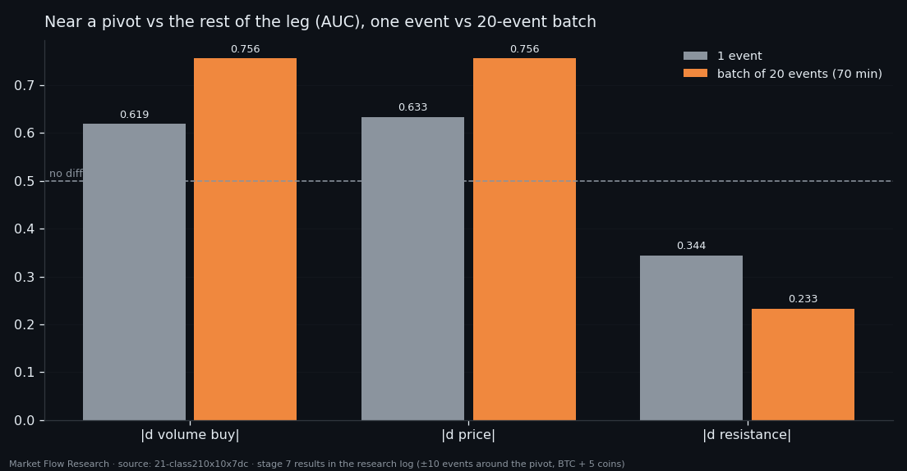
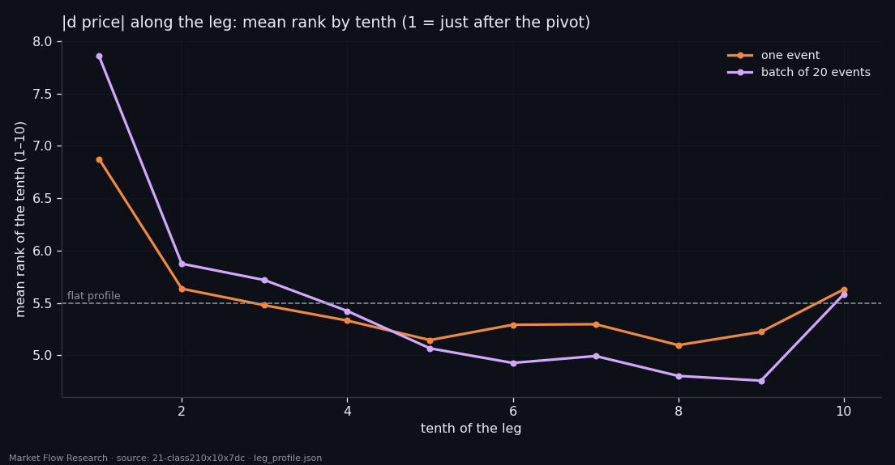
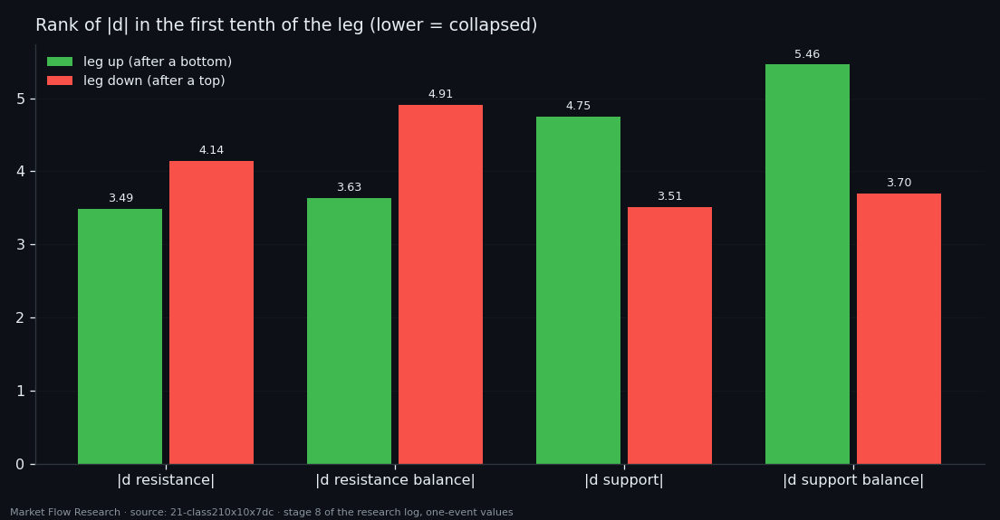
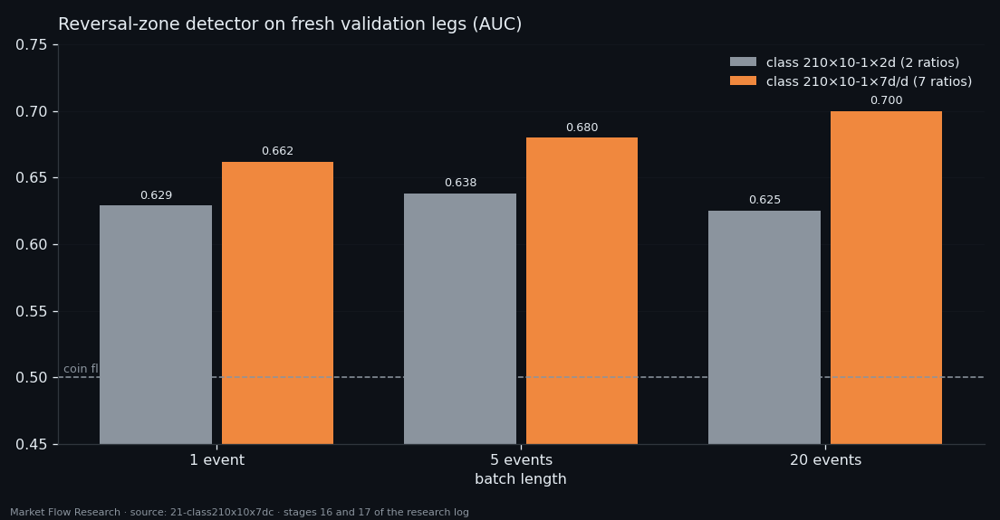

Derivatives of the Order Book — Reversals Leave a Trace, Not a Warning
In shortWe rebuilt the basic event of this series from scratch: 210 seconds cut into ten 21-second blocks, book levels divided by the volume of their own block, then first derivatives from block to block — on six coins, 402,731 events. The new description sees reversals clearly: around a pivot there is more flow and a thinner book per unit of that flow. But almost all of it sits in the first tenth of the next leg. The book reacts to a reversal far more than it foretells one. The last class of the family, derivative over derivative, lifts a detector of the reversal zone to AUC 0.700 on fresh legs — and becomes the workhorse of every study that follows.
① A new family of events
Every earlier study described an event through normalised differences between the two sides of the book. This one builds a new family of classes to look at the book in its own units:
210×10×9: the same 210 seconds cut into 10 blocks of 21 seconds, the eight book features plus price.210×10×7: each book level divided by the traded volume of its own block — resistance per unit of buying, support per unit of selling — so a quiet block and a violent one are comparable.210×10×7dc: first derivatives of those seven series from block to block.210×10-1×7dc: the same without the first block, which is the only one that looks outside its own event.
The datasets cover BTC, ETH, SOL, XRP, BNB and DOGE from 14 February to 1 September 2026 (XRP and DOGE from 5 March), split by date on 14 August: 356,357 events train and 46,368 validation. A block with no trades on one side gives NaN; its frequency follows liquidity — 2,142 values on BTC, 108,706 on DOGE — and it turns out to be the main practical limit of the whole family.

② Size, not sign — and it is after the pivot
The first comparison was events within ±10 of a 2.3% zigzag pivot (EMA-10) against the rest of their legs. Signed derivatives do not separate them at all (AUC 0.475–0.514). Magnitudes do: near a pivot there is more flow (|d vol buy| 0.619) and a thinner book per unit of that flow (|d resistance| 0.344, i.e. the other way). A batch of 20 consecutive events — 70 minutes — sees it three times better: 0.756 and 0.233, growing monotonically with batch length and holding on every coin. Near a reversal the book and the flow also hold each other more tightly (+0.17 in correlation), while the link between book levels and price weakens.
Then the same features along the leg, tenth by tenth. The whole difference sits in the first tenth. The price derivative has a mean rank of 6.88 of 10 there (7.78 on 20-event batches), the other nine tenths lie in a band of 5.1–5.6, and the first tenth beats any other in 70–79% of legs. The last tenth, before the next pivot, is only slightly raised and loses to the first in 70% of legs.
That changes the reading. A ±K window around a pivot picks up both the end of one leg and the start of the next — and almost all the effect comes from the side after the reversal. The features react to reversals more than they foretell them. For forecasting that is bad news, and it is the honest one.

③ The broken side of the book
Split by direction, the book is mirror-symmetric. After a bottom (an up leg starts), it is the resistance side that collapses in the first tenth: |d resistance| rank 3.49, its balance 3.63, while support is barely touched (4.75, 5.46). After a top, the opposite: support 3.51 and 3.70, resistance 4.14 and 4.91. The AUC between directions is 0.673 and 0.362 on a single event and grows to 0.775 and 0.753 on 20-event batches.
Along the whole leg the picture is a bowl: price and volume moves are strongest at both ends (rank 14.4 of 20 at the start, 11.4 at the end, 8.9 in the middle), book levels form the mirror bowl, and the direction difference lives only in the first 5% of the leg — after that everything returns to 0.5. Volumes and price do not tell directions apart at all (0.44–0.56): the burst at a reversal is the same whichever way the market goes next.
A warning learned on the way: separating a bottom reversal from a top one looked perfect — AUC 0.997 on the sign of the price derivative. It is an artefact. The zigzag stands on an EMA-10 of price that lags by 4–5 events, so when the EMA reaches its minimum, the raw price has already been rising for several events. It fades with batch length (0.457 at 80 events) and says nothing about the market.

④ Derivative over derivative: 0.638 → 0.700
The family then got two compact classes. 210×10-1×2d folds each side into one ratio: d_up = d vol buy / d resistance and d_down = d vol sell / d support. 210×10-1×7d/d adds the four inverse ratios — level change over its own volume change — and carries the price derivative: 7 features × 9 blocks, all dimensionless, measured by ranks because a ratio of two derivatives is unbounded.
The test is a reversal zone inside the leg — its first 5% and last 10% — against the rest, with each event ranked inside its own leg so coin and regime are removed. A logistic regression on the two-ratio class reaches 0.638 on fresh validation legs (0.635 on train: no overfitting, but no margin). On the seven-ratio class it rises to 0.662 → 0.680 → 0.700 with batch length, train still below validation. The inverse ratios carry the gain: the biggest weights are the absolute and step changes of support balance per unit of selling and resistance balance per unit of buying, plus the price derivative.
All the power is in magnitude and step (abs, step, range, std: 0.59–0.66); smoothness says nothing (0.49–0.52). The start of a leg is still seen better than its end (0.688 vs 0.632). The class is a trace-detector more than a forecaster — but it is the best description of the book this series has built, and 210×10-1×7d/d is the class every following study uses.

Reproduce this study
- Research log (.md, Ukrainian): goal, data, plan, scripts, every confirmed stage and table — enough to rerun the study
- Reproduction kit (.zip): the study's scripts, project rules and base scripts that build every class
All our bots have been tested live. The best one is Line 7.
More than a dozen bots were built from this research. Line 7 — two small transformers that read 160 hours of order book as one picture — is the only one ahead of buy & hold in live trading: +5.44% since 5 Oct while BTC moved −5.29%. Every trade is in the report.
Everything on this site is research, not financial advice.
How to read this site in 5 minutes · All studies as one .md for AI · All research
← All research